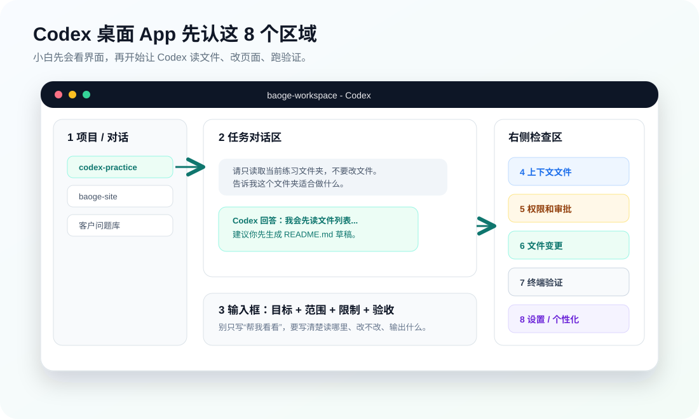

03 入门准备
了解 Codex 桌面 App
这一节不讲高深概念，只做一件事：打开 Codex 后，先把界面认清楚。小白只要能说出每个区域干什么，后面做任务就不会乱点。
本节结果
你能指着屏幕说出：哪里选项目、哪里输入任务、哪里加文件、哪里管权限、哪里看修改、哪里找设置、哪里开自动化。

一、先看整张界面地图
Codex 桌面 App 可以理解成一个“会干活的项目工作台”：左边选工作范围，中间对话下任务，右边看上下文、权限、变更和验证结果。新手最容易犯的错，是没看清自己选了哪个项目，就开始让 AI 读文件或改文件。
| 区域 | 你要知道什么 | 小白最容易错在哪 |
|---|---|---|
| 项目 / 对话 | 决定 Codex 正在处理哪个文件夹或哪段对话。 | 选错文件夹，把真实资料暴露给练习任务。 |
| 任务对话区 | 看 Codex 的计划、回复、执行过程。 | 只看最后一句“完成了”，不看过程。 |
| 输入框 | 写清目标、范围、限制、输出格式、验收方式。 | 只写“帮我弄一下”。 |
| 上下文文件 | 告诉 Codex 当前能参考哪些文件、截图、网页。 | 一次塞太多资料，结果越跑越乱。 |
| 权限 / 审批 | 决定 Codex 能读、能写、能运行命令到什么程度。 | 一上来给太高权限。 |
| 变更区 | 查看 AI 到底改了哪些文件。 | 不看变更就接受结果。 |
| 终端 / 命令 | 运行本地服务、测试、构建、检查报错。 | 不懂命令也直接执行。 |
| 设置 / 个性化 | 配置账号、权限、记忆、自定义指令和集成。 | 不配置个性化，导致每次都要重新解释自己是谁。 |
二、项目和对话：先确认 Codex 在哪个文件夹里
Project 决定 Codex 可以看到哪些文件。它就像你把助理带进哪间办公室。进错办公室，再聪明也会做错事。
- 第一次练习只选择第 01 节创建的
codex-practice。 - 不要直接选择桌面、下载、微信资料、客户文件夹。
- 真实项目开始前，先确认有没有备份或 Git 记录。
- 如果只是问概念，不需要选项目，可以用普通 Chat。
记住一句话
想让 Codex 处理文件，就进 Project；只是问概念、写草稿、解释术语，用 Chat 就够。
三、输入框：别聊天，要下任务
Codex 的输入框不是普通聊天框。好的任务要包含 5 个部分：目标、范围、限制、输出、验收。
请只读取当前练习文件夹，不要修改任何文件。 目标：帮我了解这个文件夹适合做什么。 范围：只看当前文件夹里的文件。 限制：不要读取上级目录，不要联网，不要创建新文件。 输出：用 5 条 bullet 总结。 验收：最后告诉我你读取了哪些文件。
以后所有任务都按这个结构写，小白的成功率会明显提高。
四、上下文：给资料要少而准
上下文可以是文件、截图、网页、文字说明。新手不要一次给 30 个文件。先给一个目标文件、一张截图、一段背景，让 Codex 做小闭环。
好的上下文
- 当前练习文件夹。
- 一张界面截图。
- 一段明确目标。
- 一个输出模板。
不好的上下文
- 整个桌面。
- 客户聊天原文。
- 几十个无关文件。
- 账号、付款、验证码截图。
五、权限：先只读，再放开
权限决定 Codex 能做到哪一步。新手第一周默认只用“只读”和“写草稿”，不要直接让它大范围改文件、运行不懂的命令、发布外部内容。
只读
适合总结资料、解释项目、生成建议，不改任何文件。
写草稿
适合生成 README、课程草稿、FAQ，不覆盖原文件。
改项目
适合修改网页、代码、文档。必须看变更。
外发 / 发布
适合 GitHub、飞书、消息发送。必须人工确认。
六、变更和终端：不要只听它说完成
Codex 做完任务后，你要看三件事：改了哪些文件、页面能不能打开、命令有没有报错。没有验证，就不算完成。
- 看变更区：确认改动文件是不是预期范围。
- 看预览：页面是否正常显示，文字是否重叠。
- 看终端：服务是否启动，测试是否通过。
- 看结果：输出是否能交给学员或客户。
七、设置：先知道在哪里，后面再深入
设置里会有账号、主题、权限、浏览器、电脑操控、Git、Hooks、记忆、个性化等选项。第三节先知道入口在哪里，第 11 节会重点讲个性化和记忆。
新手不要乱开全部权限。每开一个集成，都要知道它能读什么、能写什么、会不会外发。
八、本节作业
- 打开 Codex 桌面 App。
- 选中
codex-practice练习文件夹。 - 指出界面里的 8 个区域。
- 输入下面这条只读任务。
- 检查它是否说明读取了哪些文件。
请只读取当前练习文件夹，不要修改任何文件。 请告诉我： 1. 当前项目文件夹叫什么 2. 你看到了哪些文件 3. 每个文件大概是做什么的 4. 如果我要继续学习 Codex，下一步应该做什么